EVITAR QUE
CONFLITOS VIREM
PROCESSOS
Mapeamento de riscos e definição de medidas preventivas para reduzir a exposição trabalhista.
↘
WhatsApp →Direito do trabalho para empresas
Defesa firme quando o processo já existe. Prevenção jurídica para evitar que novos conflitos comprometam a empresa.
O PROCESSO TRABALHISTA
NÃO PODE DITAR O
FUTURO DA EMPRESA.
Problemas que resolvemos
A empresa recebe orientação para agir antes do problema e respaldo técnico para enfrentá-lo quando ele surge.
Mapeamento de riscos e definição de medidas preventivas para reduzir a exposição trabalhista.
↘Orientação estratégica em admissões, rotina contratual, medidas disciplinares e desligamentos.
↘Construção da defesa, organização das provas, audiências, recursos e condução processual.
↘Análise dos processos existentes para identificar padrões e impedir que o mesmo problema se repita.
↘Prevenção trabalhista
A prevenção começa ao compreender onde o risco nasce dentro da empresa.
Contratos, documentos, procedimentos internos e decisões do RH são analisados de forma estratégica. O objetivo é corrigir vulnerabilidades antes que elas se transformem em condenações.
Quero prevenir processos →Artigos
Análises objetivas sobre prevenção, gestão de riscos e defesa trabalhista empresarial.
GESTÃO DE RISCO
Os sinais que a empresa precisa identificar antes que o conflito chegue à Justiça.
Artigo em breve →ESTRATÉGIA PROCESSUAL
As primeiras decisões podem definir a qualidade da defesa e o resultado do processo.
Artigo em breve →ROTINA TRABALHISTA
Documentação, coerência e planejamento reduzem riscos em uma decisão delicada.
Artigo em breve →Atendimento empresarial em todo o Brasil
Explique brevemente o contexto e receba orientação sobre o próximo passo para proteger a empresa.
Conversar no WhatsApp →+55 27 98844-7051samiresgalvaoadvogada@zohomail.com@samiresgalvaoadvogada ↗